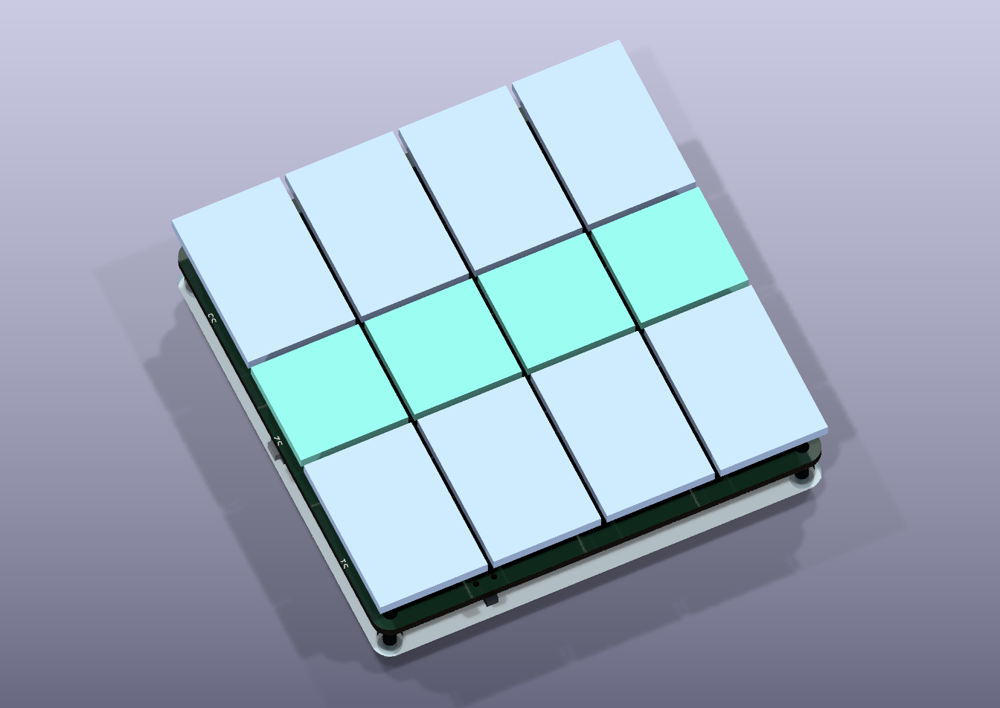
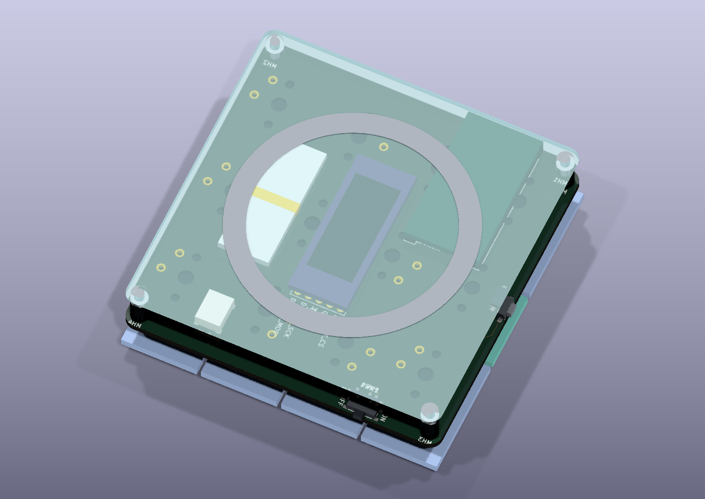
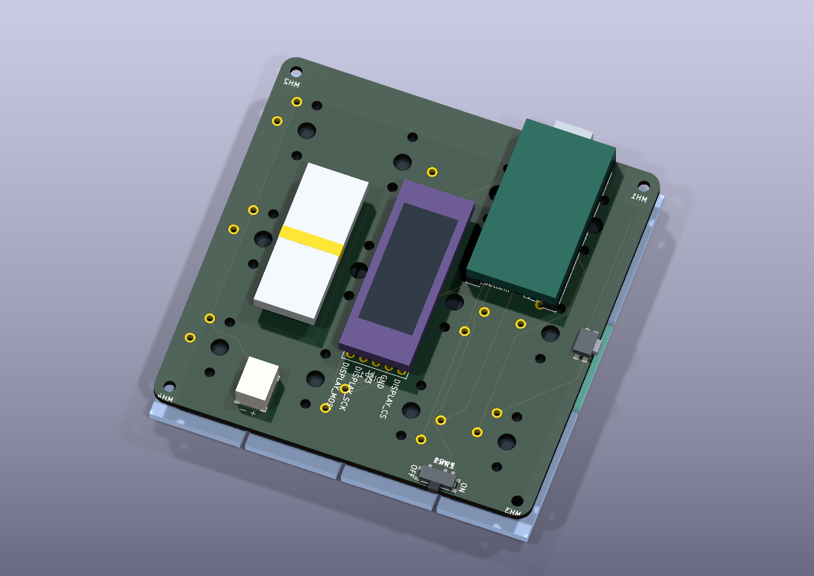

Braille keyboard review
Editable Ergogen source, routed KiCad board, acrylic baseplate and 3D assembly previews.
Review draft: the accepted controller/switch clash is preserved. One display connection remains unrouted. Full clearance and silkscreen findings are included for manual KiCad review.
| Current draft dimensions | Size |
|---|---|
| PCB and acrylic outline | 75.2 × 75.2 mm |
| Including USB and side buttons | 76.0 × 77.469 mm |
| Illustrated assembly height | 20.0 mm — provisional |
Spacing, keycap dimensions, socket heights and the adhesive ring remain configurable assumptions. The 3D component shapes are dimensional envelopes, rather than manufacturer models.






Review and source files
- Switch rotation workflow (SVG)
- Design notes and rebuild instructions
- Dimensioned layout and stack study
- KiCad design-rule report
- Controller and component pin map
- Editable Ergogen configuration
- KiCad PCB with assembly preview — keep the complete folder structure for its models.
- Board-only STEP model
- Measured dimensions and validation summary